Round 30 broke that rule in both directions. Left is what the page drew, right is the app today, taken from a real run.
Your call · the page invented these
Each one either goes into the app first, with its own design round, or leaves the page.
1 · Variants above the questionThe page shows the choices as small pictures and lights up the one you pick. The app opens them in a side panel with tabs.I'd bring it to the app
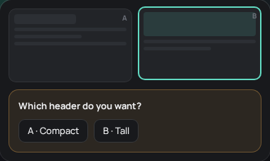
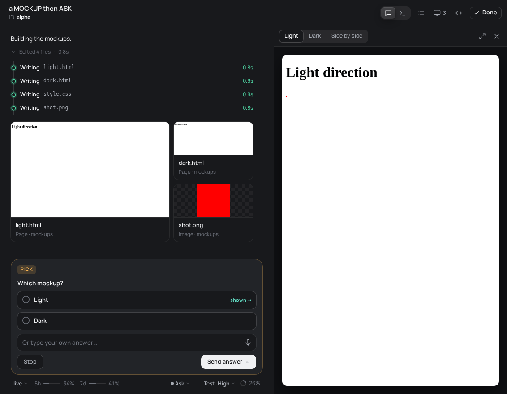
2 · What each session is doingThe page gives every session a second line ("Editing checkout.css") and its own coloured tile. The app has one line per session and a label only when it needs you.Second line: maybe · tile: drop
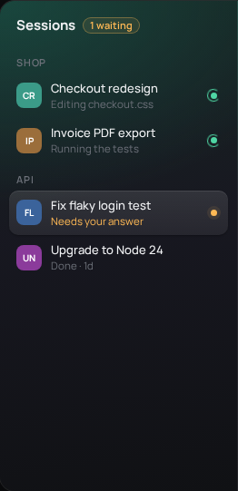
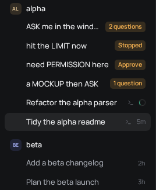
3 · Waiting sessions rise to the topThe page reorders the inbox when a session starts waiting, and counts them next to "Sessions". The app keeps sessions under their project, newest first.I'd drop both
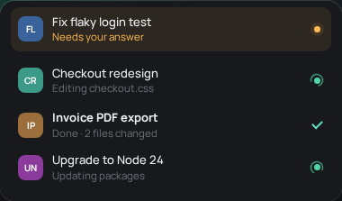
No call needed · the app is better, the page copies it
Here the page was a poorer drawing of something the app already does well.
Question cardRadio rows, your own answer, Stop and Send.
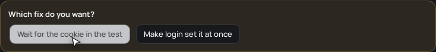
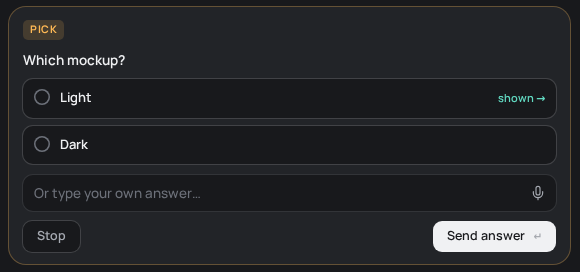
Limit reachedA card with every account you can continue on.
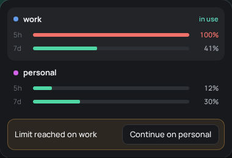
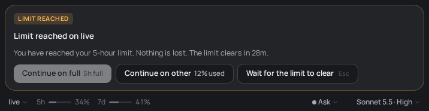
Limits per accountA table, with how far each window has run and when it resets.
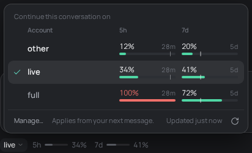
StepsA timeline with times, folded into one line when done.
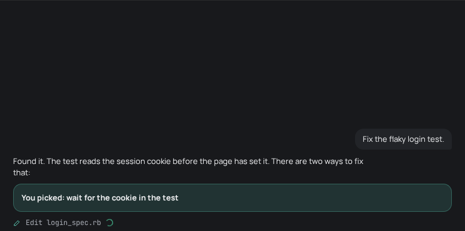
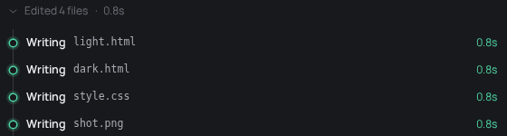
Under the message boxAccount, limits with numbers, mode, model, context ring.
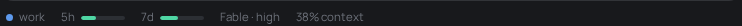
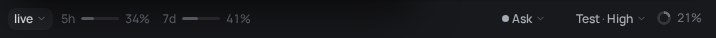
HeaderIcons for chat and terminal, outline, previews, changes, Done.
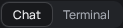
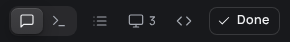
How the page stays true from now on
Redrawing by hand is how round 30 drifted. Two ways to stop it.
AThe page runs the real appRecommended
The window on the page is the app's own page, fed by a scripted stand-in for the service. Same idea as the tests.
Cannot drift: change the app and the page changes with it
Visitors can click around in it
More work first: the stand-in has to play a believable morning
New ideas must be built before they can be shown
BRedraw with the app's own styles
Keep the hand-made animations, but build them from the app's stylesheet and markup instead of look-alikes.
Quicker, and every scene can be staged exactly
Still a copy: it drifts again whenever the app changes
Not clickable
Open questions
1, 2 and 3 above: bring to the app, or drop from the page?
Staying true: A or B?
Tagline: "An inbox for your agents." is the headline. Where should "Stop watching terminals." go: above the Get it section, or only in the GitHub description?